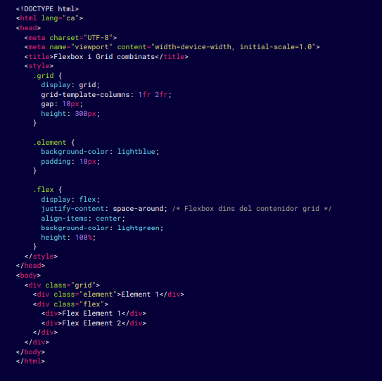

Casos comunes para felxbox:
Casos comunes para Grid:
Cuando se trata de crear diseños flexibles, adaptables y organizados, Flexbox y CSS Grid son las dos herramientas más poderosas de CSS. Con ellas puedes controlar la disposición de los elementos en la página, ya sea en una fila, columna o en cuadrículas complejas, adaptando los elementos fácilmente a diferentes tamaños de pantalla y requisitos.
element {
flex-shrink: 1; /* Permite que el elemento se reduzca cuando no hay espacio suficiente
*/
}
.element {
align-self: center; /* Centra el elemento individualmente dentro del contenedor */
}
Propiedades clave en CSS Grid:
.grid {
display: grid;
grid-template-columns: 1fr 2fr 1fr; /* Define 3 columnas con medidas flexibles */
grid-template-rows: 100px auto; /* Define dos columnas, una fija y una automatica */
}
element-gran {
grid-column: span 2; /* El elemento ocupará 2 columnas */
grid-row: span 1; /* El elemento solo ocupará 1 fila */
}
.grid {
gap: 20px; /* Define un espacio de 20 pixeles entre las filas i las columnas */
}
Ejemplo básico con CSS Grid
En este ejemplo:

En este ejemplo: